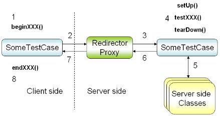

Cactus 擴展了 JUnit 3.x，被設計來輔助您進行In-Container測試，從API實作的角度來說，Cactus擴 充了JUnit 3.x一些類別，並重新定義了一些方法，Cactus可以用嵌入式（Embedded）的方式運行起一個容器，從中獲取測試時所必要的物件或資源，也可以 透過獨立架設的容器，線上執行測試。
以嵌入式的方式來說，可以使用Jetty作為嵌入式的容器，實際來看測試案例撰寫的方式：
package test.cc.openhome;
import java.io.IOException;
import javax.servlet.*;
import javax.servlet.http.*;
import junit.framework.Test;
import junit.framework.TestSuite;
import org.apache.cactus.ServletTestCase;
import org.apache.cactus.WebRequest;
import org.apache.cactus.extension.jetty.Jetty5xTestSetup;
import org.apache.cactus.extension.jetty.Jetty6xTestSetup;
import cc.openhome.LoginServlet;
class TestForLoginServlet extends LoginServlet {
public void doTest(HttpServletRequest req, HttpServletResponse resp)
throws ServletException, IOException {
doPost(req, resp);
}
}
class DummyHttpServletRequest extends HttpServletRequestWrapper {
private String forwardToPage;
private boolean isForwarded;
public DummyHttpServletRequest(HttpServletRequest request) {
super(request);
}
@Override
public RequestDispatcher getRequestDispatcher(String path) {
forwardToPage = path;
return new RequestDispatcher() {
public void forward(ServletRequest req, ServletResponse resp)
throws ServletException, IOException {
isForwarded = true;
}
public void include(ServletRequest req, ServletResponse resp)
throws ServletException, IOException {
}
};
}
public String getForwardToPage() {
return forwardToPage;
}
public boolean isForwarded() {
return isForwarded;
}
}
public class LoginServletTest extends ServletTestCase {
static {
System.setProperty(
"cactus.contextURL", "http://localhost:8080/example");
}
public static Test suite() {
TestSuite suite = new TestSuite();
suite.addTestSuite(LoginServletTest.class);
return new Jetty5xTestSetup(suite);
}
public void beginLoginSuccess(WebRequest request) {
request.addParameter("user", "justin");
request.addParameter("passwd", "1234");
}
public void testLoginSuccess() throws Throwable {
DummyHttpServletRequest dummyRequest =
new DummyHttpServletRequest(request);
new TestForLoginServlet().doTest(dummyRequest, response);
assertTrue(dummyRequest.isForwarded());
assertEquals("success.html", dummyRequest.getForwardToPage());
}
public void beginLoginFail(WebRequest request) {
request.addParameter("user", "someone");
request.addParameter("passwd", "1234");
}
public void testLoginFail() throws Throwable {
DummyHttpServletRequest dummyRequest =
new DummyHttpServletRequest(request);
new TestForLoginServlet().doTest(dummyRequest, response);
assertTrue(dummyRequest.isForwarded());
assertEquals("login.html", dummyRequest.getForwardToPage());
}
}
首先要注意的是，在撰寫文件的此時，Cactus擴充的對象是JUnit 3.x， 注意到套件部份使用的是junit.framework，ServletTestCase擴充了TestCase，你撰寫 Servlet測試時時，也是以繼承方式擴充ServletTestCase。
ServletTestCase 中可以定義beginXXX()方法，這會在對應的testXXX()方法之前執行，beginXXX()方法會傳入WebRequest，你可以用它來 作一些請求參數等的設定。
如果要以嵌入式方式來運行Jetty容器，撰寫文件的此時，可以使用Jetty5xTestSetup， 這可用來包裹TestSuite， 傳回Jetty5xTestSetup物 件給JUnit 3.x的TestRunner， 將會以嵌入式方運行Jetty容器。
要注意的是，Cactus要求一定要設定的屬性是cactus.contextURL， 用來設定HTTP請求時容器的網址，如果你有多個測試類別要共用這個設定的話，也可以於執 行時指定一個.properties檔案的所在（預設會在Classpath中尋找），.properties中設定相關屬性。例如：
java -Dcactus.config=cactus.properties ...
為何要設定請求網址？Cactus的測試執行分作客戶端、代理轉發與伺服端執行測試三個階段，了解這些階段，對於使用Cactus是很重要的：

- 當測試開始時，客戶端TestRunner會產生ServletTestCase實例，執行beginXXX()方法，在這個方法中您可以準備一些HTTP 相關的參數，例如加入使用者名稱、密碼等參數。
- 客戶端TestRunner使 用HTTP與伺服器上的Redirector Proxy進行溝通，Redirector Proxy會接收請求並產生相關的物件，像是HttpServletRequest、 HttpServletResponse等。
- Redirector Proxy會再產生ServletTestCase實 例，之前Redirector Proxy所保留的HttpServletRequest、 HttpServletResponse等，會設定給此時所產生的ServletTestCase實 例，程式中可以使用request、response等名稱來取得。
- Redirector Proxy開 始執行上面的setUp ()、testXXX()、tearDown()等方法，收集測試結果， 這部份與單純的JUnit 是相同的。
- ServletTestCase與 所使用到的類別實例互動。
- Redirector Proxy執行ServletTestCase完
成，取得測試結果。
- Redirector Proxy將測試結果以HTTP傳回給客戶端TestRunner。
- 客戶端TestRunner執行endXXX()方法（接受WebResponse物件）， 可以在這邊分析HTTP傳回的訊息，並顯示測試結果。
如果使用嵌入的方式來運作，你無需接觸Redirector Proxy的細節，實際上這是由一個ServletTestRedirector來負責，後面的文件還會看到 ServletTestRedirector的設定。